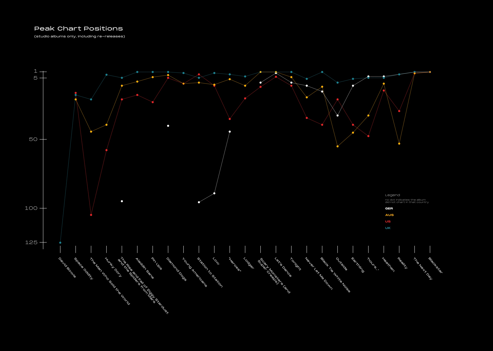

Play: David Bowie Data Viz
Bowie’s studio albums and their creation, visualized.

A chart showing the peak chart positions of every David Bowie studio album in the US, Australia, Germany, and the UK.
A map showing the studio location of every album recorded in London.
The makeup of every Bowie studio album.
A few quantitative stats about the studio albums.
Timelines reflecting the relases, recording, and tours in support of Bowie's studio albums.